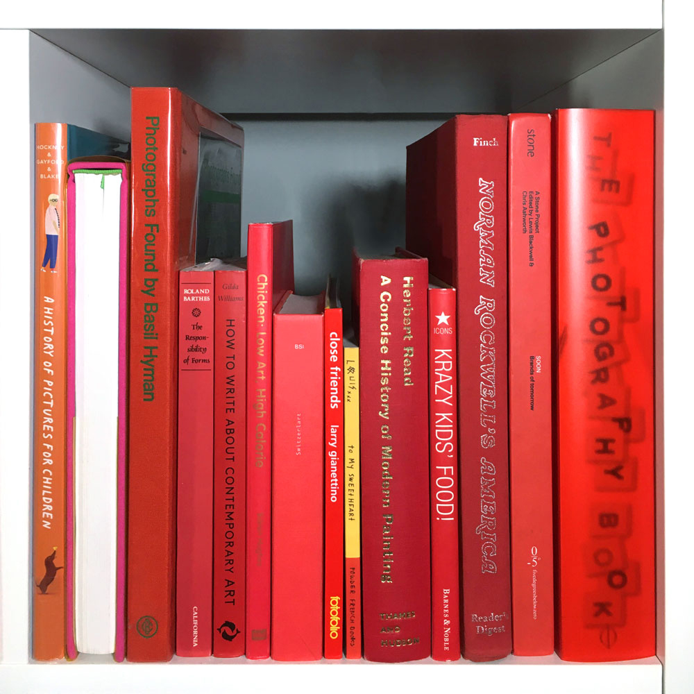

- A HISTORY OF PICTURES FOR CHILDREN:
FROM CAVE PAINTINGS TO COMPUTER DRAWINGS
David Hockney, Martin Gayford
Harry N. Adams, New York, 2018
- HONAR: THE AFKHAMI COLLECTION OF MODERN
AND CONTEMPORARY IRANIAN ART
Susan Babaie, Venetia Porter, Natasha Morris
Phaidon Press, London, 2017
- PHOTOGRAPHS FOUND: A PERSONAL MEMOIR
OF 1960S BRITAIN
Basil Hyman
Booth-Clibborn, United Kingdom, 2013
- THE RESPONSIBILITY OF FORMS: CRITICAL ESSAYS
ON MUSIC, ART, AND REPRESENTATION
Roland Barthes
University of California Press, Berkeley, 1991
- HOW TO WRITE ABOUT CONTEMPORARY ART
Gilda Williams
Thames + Hudson, London, 2014
- CHICKEN: LOW ART, HIGH CALORIE
Siaron Hughes
Mark Batty Publisher, LLC, London, 2009
- SWITZERLART: A COLLECTION OF SWISS ART
IN FIVE CHAPTERS
Kathleen Bühler
Cornerhouse, Zurich, 2011
- CLOSE FRIENDS
Larry Gianettino
Fotofolio, Incorporated, New York, 1999
- TO MY SWEETHEART
Louis Cannizzaro
self-published, 2003
- A CONCISE HISTORY OF MODERN PAINTING
Herbert Read
Thames + Hudson, 1974
- CRAZY KIDS' FOOD! VINTAGE FOOD GRAPHICS
Steve Roden, Dan Goodsell
Barnes + Noble, 2006
- NORMAN ROCKWELL'S AMERICA
Norman Rockwell, Christopher Finch
Henry N. Abrams, Incorporated, 1985
- SOON: BRANDS OF TOMORROW
Lewis Blackwell, Chris Ashworth
Laurence King, London, 2001
- THE PHOTOGRAPHY BOOK: 2ND EDITION
Ian Jeffrey
Phaidon Press, London, 2014
